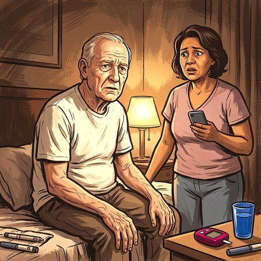

Consulta rápida à beira do leito
Condutas, doses e interações.
Referências da aula · 9
- McClelland G, Rodgers H, Flynn D, Price C. The frequency, characteristics and aetiology of stroke mimic presentations: a narrative review. Eur J Emerg Med. 2019;26(1):2-8. PMID 29727304. doi:10.1097/MEJ.0000000000000550.PubMedDOI
- Tsivgoulis G, Zand R, Katsanos AH, et al. Safety of intravenous thrombolysis in stroke mimics: prospective 5-year study and comprehensive meta-analysis. Stroke. 2015;46(5):1281-7. PMID 25791717. doi:10.1161/STROKEAHA.115.009012.PubMedDOI
- Liberman AL, Prabhakaran S. Stroke chameleons and stroke mimics in the emergency department. Curr Neurol Neurosci Rep. 2017;17(2):15 (). PMID 28229398. doi:10.1007/s11910-017-0727-0.PubMedDOI
- Ippen FM, Walter F, Hametner C, et al. Age-dependent differences in the rate and symptoms of TIA mimics in patients presenting with a suspected TIA to a neurological emergency room. Front Neurol. 2021;12:644223. PMID 33658979. doi:10.3389/fneur.2021.644223.PubMedDOI
- Powers WJ, Rabinstein AA, Ackerson T, et al. Guidelines for the early management of patients with acute ischemic stroke: 2019 update to the 2018 guidelines. Stroke. 2019;50(12):e344-418. PMID 31662037. doi:10.1161/STR.0000000000000211.PubMedDOI
- Prabhakaran S, et al. 2026 Guideline for the Early Management of Patients With Acute Ischemic Stroke: a guideline from the American Heart Association/American Stroke Association. Stroke. 2026. doi:10.1161/STR.0000000000000513.DOI
- Libman RB, Wirkowski E, Alvir J, Rao TH. Conditions that mimic stroke in the emergency department: implications for acute stroke trials. Arch Neurol. 1995;52(11):1119-22. PMID 7487564. doi:10.1001/archneur.1995.00540350113023.PubMedDOI
- Todd paralysis. In: StatPearls [Internet]. Treasure Island (FL): StatPearls Publishing.
- Topcuoglu MA, Saka E, Silverman SB, Schwamm LH, Singhal AB. Recrudescence of deficits after stroke: clinical and imaging phenotype, triggers, and risk factors. JAMA Neurol. 2017;74(9):1048-55. PMID 28783808. doi:10.1001/jamaneurol.2017.1668.PubMedDOI
Documentos oficiais
Leis e publicações do Ministério da Saúde sobre o cuidado da pessoa idosa, de acesso livre.
Abrir os documentos